All of Us Are Dead
All of Us Are Dead é uma série sul-coreana de zumbis lançada pela Netflix. A trama se desenrola em uma escola secundária, onde um surto misterioso transforma os alunos em zumbis. O foco principal é em um grupo de estudantes que precisa lutar pela sobrevivência enquanto a infecção se espalha rapidamente, transformando seus colegas em criaturas sedentas de carne.
Os protagonistas, incluindo Joon-woo (interpretado por Yoon Chan-young) e Nam-ra (interpretada por Park Ji-hu), tentam encontrar maneiras de escapar do prédio da escola, enfrentando não apenas os zumbis, mas também as complexidades de seus relacionamentos interpessoais.
A série aborda temas como amizade, confiança, traição e o impacto psicológico de viver em meio ao caos zumbi. Com elementos de suspense, ação e drama, "Até nós Todos Estarmos Mortos" oferece uma experiência emocionante enquanto os personagens buscam desesperadamente uma saída para a terrível situação em que se encontram.
Sinopse
InicioUma epidemia mortal surge em uma escola. Encurralados, os alunos só tem uma opção: lutar com todas as forças para não virarem zumbis.
Lista de episódios de All of Us Are Dead
Inicio| Temporada | Episódios | Estreia da temporada |
|---|---|---|
| 1 | 12 | 28 de janeiro de 2022 |
1ª temporada
InicioA série "All of Us Are Dead" se desenrola na Escola Lee Byeong-chan, apresentando diversos personagens e problemáticas sérias como bullying e assédio sexual. O tom pesado da trama é estabelecido desde o início, quando uma aluna é mordida por um rato nervoso em um laboratório de ciências. O enredo se desdobra de maneira imprevisível, com cada episódio introduzindo novos elementos, resultando em diversas histórias entrelaçadas.
A narrativa inclui um romance platônico entre Nam On-jo e Lee Cheong-san, além de outros dramas típicos de séries adolescentes. No entanto, a singularidade da história é evidente devido à presença de zumbis ágeis, pais de alunos corajosos que buscam salvar seus filhos e questões governamentais, como lei marcial e o dilema de resgatar ou não sobreviventes.
A série destaca-se pela riqueza de personagens, evitando a perda de qualidade nas tramas mesmo com um grande elenco. Cada personagem, mesmo aqueles destinados a enfrentar desfechos trágicos, possui importância na narrativa. Um exemplo notável é a solução prática e inteligente apresentada quando um grupo de alunos encurralados precisa resolver o problema do banheiro.
A abordagem realista é acentuada por momentos brilhantes, como a introdução de um personagem youtuber que decide sair da segurança para transmitir ao vivo encontros com zumbis. Essas situações aproximam a ficção da realidade cotidiana dos espectadores.
A complexidade da narrativa e a variedade de personagens enfrentando um problema comum lembram obras como "Battle Royale", evidenciando que o suspense e o terror orientais têm histórias ricas a serem contadas. A série demonstra que, quando bem trabalhado, um grande número de personagens pode gerar tensão e qualidade na trama.